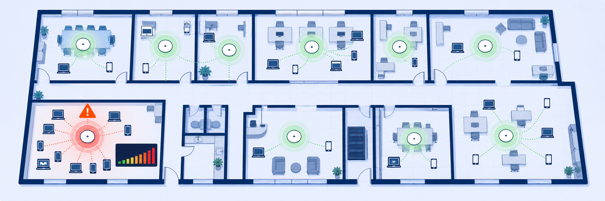
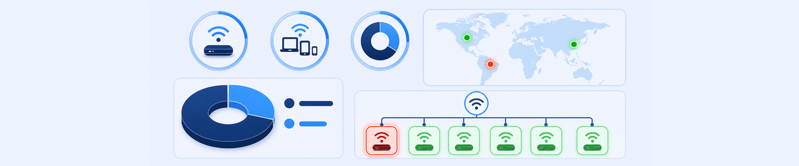
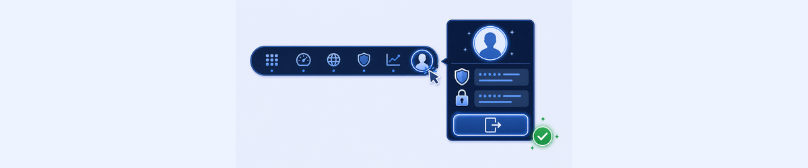

Lab 14: Understanding Wi-Fi Dashboard
LAB 14
Scenario: You want to proactively monitor Wi-Fi Access Point performance across your organisation. Use the ZDX Wi-Fi Dashboard to identify poor-performing APs, review connected devices, and examine Source to Gateway Latency.

THINK FIRST · WI-FI DASHBOARD
Individual user Wi-Fi problems (Labs 2 and 5) are reactive. The Wi-Fi Dashboard is proactive: it aggregates Wi-Fi data from all devices to give you an access-point level health view. One red AP on the dashboard = every user connected to that AP is potentially affected.
- The Wi-Fi Dashboard shows access point performance at the AP level, while the User Overview shows Wi-Fi data per user. What is the operational advantage of the AP-level view for operations staff?
- AP-Columbus-OH shows as Poor (red) with a Source to Gateway Latency of 144.4ms average. Curtis Hardwick is in the Active Users table for this AP with a ZDX Score. How does the Wi-Fi Dashboard accelerate the root cause investigation compared to starting from the User Overview?
- The Wi-Fi Band Distribution shows 90% of devices on 5GHz and 40% on 2.4GHz (some devices have both). If the dashboard shows an AP is Poor but most connected devices are on 2.4GHz, what does this suggest about the root cause?
Task 14.1: Accessing Wi-Fi Dashboard
1 Explore the Wi-Fi Dashboard
- From the ZDX Admin Portal, navigate to Dashboard › Wi-Fi Dashboard.
- Review the summary metrics at the top:
- Total Access Points
- Wi-Fi Performance of Access Points (Good/Poor bar)
- Total Devices Connected
- ZDX Score Distribution (Good/Okay/Poor)
- Review the Wi-Fi Band Distribution pie chart (5GHz vs. 2.4GHz).
- Review the Wi-Fi Performance by Geolocation world map.
- Mouse-over or click a map marker to see access points and devices for that region.
- Click View Access Points to see the Wi-Fi Access Points list. Toggle between Tree View and List View.
- Click View Details for an Access Point shown in Poor (red) category.
- Review the AP Details: SSID, Location, AP MAC, Wi-Fi Performance (Good/Poor), Devices connected.
- Scroll down to Key Metrics → Source to Gateway Latency and review the latency graph.
- Scroll to the Active Users section and examine the connected devices table (Device, User, BSSID, Wi-Fi Adapter, ZDX Score, Signal Strength, Wi-Fi Type, Channel, OS).

My Questions
My Notes
Task 14.2: Logout of ZDX Admin Portal
2 Complete the Lab and Log Out
- Click the My Profile button in the ZDX Admin Portal.
- Click Logout.
Note: This is the final lab in the series. Return to the course page to complete the quiz and be marked as done for the course.

My Questions
My Notes
MENTAL NOTE
Wi-Fi Dashboard = AP-level aggregated view of Wi-Fi performance. Summary: Total APs, Performance (Good/Poor), Devices Connected, ZDX Score Distribution, Band Distribution. Map: Wi-Fi Performance by Geolocation. AP Details: SSID, Latency graph, Active Users table (ZDX Score, Signal Strength, Wi-Fi Type, Channel). Red AP = all connected users potentially affected. Escalate to on-site team with AP name, SSID, and latency data.